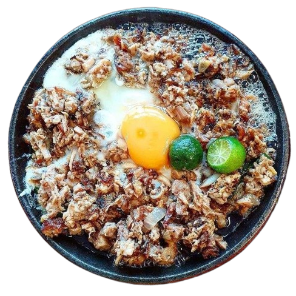
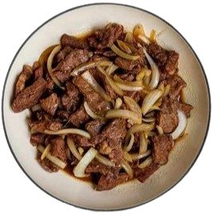

ClickMenu
Join us as we embrace the intersection of tradition and technology, where the heartwarming essence of carenderias meets the convenience of the digital age. Settle in at the table, savor a variety of Filipino cuisines, and join a community that honors the tradition of home-cooked meals. Let's enjoy Philippine cuisine together and turn every meal into a celebration of our rich culinary history.
Embark on a culinary adventure with us as we redefine the way you experience local carenderias. Our commitment goes beyond just digitizing the
process — we're dedicated to preserving the authenticity of Filipino culinary traditions. Through our platform, you not only have the convenience
of online reservations but also gain access to a curated selection of time-honored recipes passed down through generations.
In our mission to bridge the gap between tradition and technology, we've incorporated user-friendly features that let you explore the diverse
landscape of Filipino cuisine effortlessly. From classic adobo to regional specialties, our platform showcases the vibrant tapestry of flavors
that make Filipino food truly unique. Each carenderia on our platform represents a piece of the rich culinary mosaic that defines the Philippines.
our journey doesn't stop at reservations. We're committed to creating a community where food enthusiasts, both local and global, can connect and
share their love for Filipino dishes. Engage in discussions, discover hidden gems, and learn the stories behind your favorite meals. It's a space
where the passion for food and the appreciation for cultural heritage converge.
Main Dishes
Sisig

Beef Bulalo
Beef Steak

Bicol Express
Other Dishes
-
Pork Sinigang
Good Quality Pork extra tamarind and vegetables
-
Beef Kaldereta
Tender beef simmered in a hot tomato sauce and vegetables
-
Beef Bulalo
Soup of tender beef shanks and marrow bones and vegetables
-
Beef Steak
Succulent slices of beef marinated and cooked in a savory soy-citrus sauce
-

Pinakbet
Colorful medley of mixed vegetables, simmered in shrimp paste
-
Bicol Express
Bold and fiery flavors of Bicolano cuisine, spicy coconut stew with pork, chilies
-

Pork Kare-kare
Rich and creamy stew featuring tender pork, tripe and savory peanut sauce
-
Sisig
Sizzling dish finely chopped of season pork face, and onions with egg
-

Menudo
Scrumptiously rich tomato based stew of pork meat, liver, and hint of sweetness